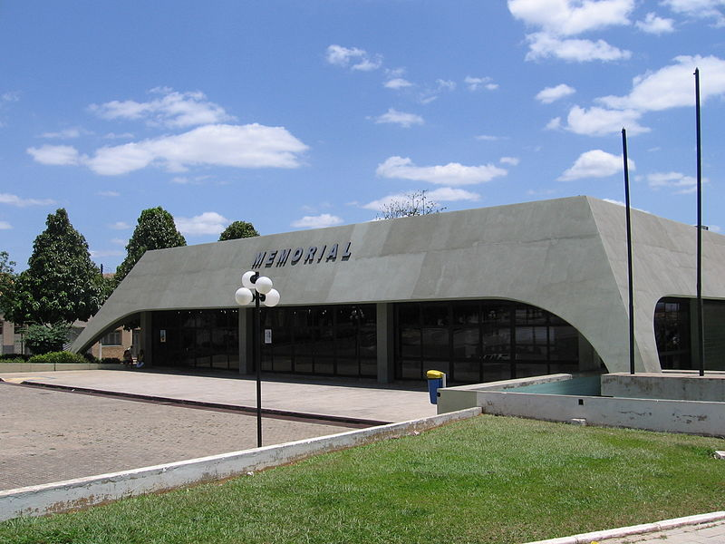
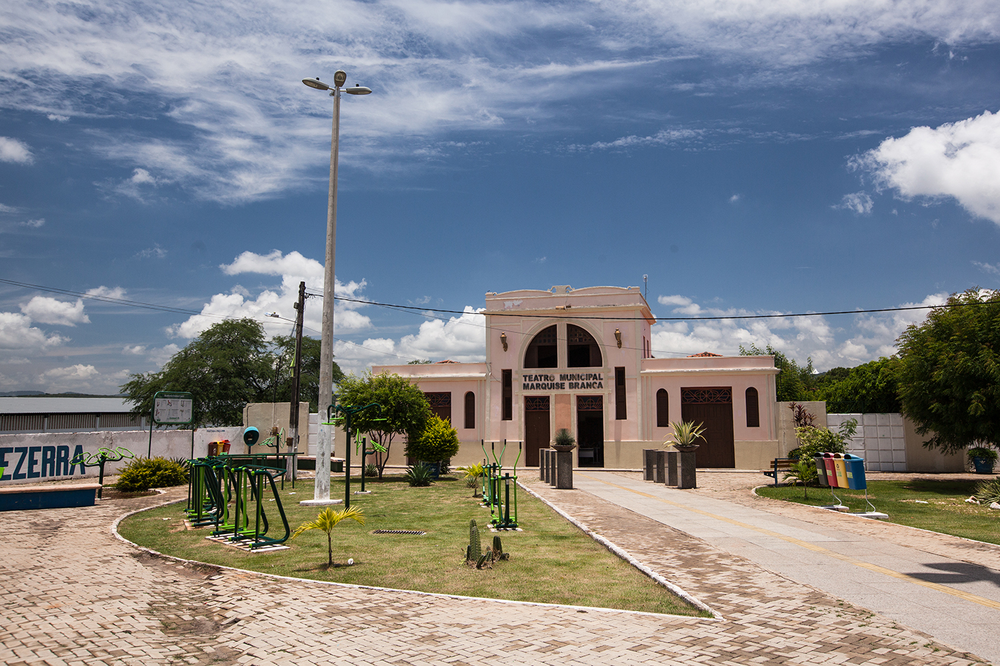
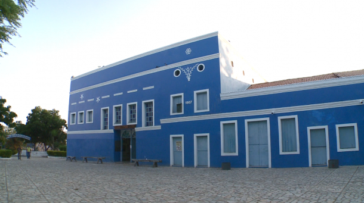

Informações técnicas sobre relevo, população, IDH etc.
| INFORMAÇÕES | |
|---|---|
| Municípios limítrofes | Barbalha, Caririaçu, Crato e Missão Velha |
| Fundação | 30 de julho de 1858 (162 anos) |
| Área total | 248 km² |
| Clima | Tropical |
| IDH | 0,694 — médio |
| PIB | R$ 4 427 525,37 mil |
| INFORMAÇÕES TERRITORIAIS | |
|---|---|
| Número de habitantes | 274 207 habitantes |
| Superfície de Juazeiro do Norte |
24 822 hectares
248,22 km² |
| Densidade populacional | 1 104,7 ha./km² |
| Altitude de Juazeiro do Norte | 429 metros de altitude |
| Coordenadas geográficas decimais |
Latitude:
-7.23718
Longitude: -39.3222 |
| Coordenadas geográficas sexagesimais | Latitude: 7° 14' 14'' Sul , Longitude: 39° 19' 20'' Oeste |
| INFORMAÇÕES DO MUNICÍPIO | |
|---|---|
| Endereço da Prefeitura Municipal de Juazeiro do Norte |
Juazeiro do Norte
Prefeitura de Juazeiro do Norte
Pça. Dirceu Figueiredo, s/n Juazeiro do Norte - CE, 63010-010 Brasil |
| Telefone da prefeitura |
(88) 3566-1052
Internacional: +55 88 3566-1052 |
| Fax |
(88) 3566-1001
Internacional: +55 88 3566-1001 |
| Endereço electrónicoda prefeitura |
gabinete@juazeiro.ce.gov.br
|
| Site oficial do município | juazeirodonorte.ce.gov.br |
| INFORMAÇÕES DO ADMINISTRATIVAS | ||
|---|---|---|
| Prefeito de Juazeiro do Norte | Glêdson Lima Bezerra | |
| Partido politico | PODE | |
| INFORMAÇÕES DE TRANSPORTE | |
|---|---|
| Transporte urbano disponível | Não Disponível |
| Aeroporto |
Aeroporto Regional do Cariri
Aeroporto de Picos
244.1 km
Aeroporto de Paulo Afonso
268.2 km
|
| INFORMAÇÕES DE DISTÂNCIA A OUTRAS CIDADES | ||
|---|---|---|
| São Paulo : 1977 km | Rio de Janeiro : 1793 km | Brasília : 1336 km |
| Salvador : 644 km | Belo Horizonte : 1487 km | Manaus : 2340 km |
| Curitiba : 2284 km | Recife : 498 km mais perto | Goiânia : 1507 km |
| Belém : 1205 km | Porto Alegre : 2826 km | Guarulhos : 1955 km |
| Campinas : 1931 km | São Luís : 762 km | São Gonçalo : 2695 km |
| Distância calculada em linha reta! | ||
Conheça mais sobre a história da Juazeiro do Norte.
História Juazeiro do Norte
Juazeiro do Norte era inicialmente um distrito da cidade vizinha Crato, até que o jovem Padre Cícero Romão Batista resolveu se fixar como pároco no lugarejo, até então sem capelão e, portanto, sem os serviços religiosos. Padre Cícero foi um dos responsáveis, tempos depois, pela emancipação e independência da cidade. Por conta do chamado "milagre em Juazeiro" (quando Padre Cícero deu a hóstia sagrada à beata Maria de Araújo, a hóstia se transformou em sangue), a figura do padre assumiu características místicas e passou a ser venerado pelo povo como um santo. Hoje a cidade é a segunda do estado é referência no Nordeste graças ao padre.
Em 1827, o padre Pedro Ribeiro de Carvalho construiu uma capela em louvor a Nossa Senhora das Dores, próxima à estrada real que ligava o Crato à Missão Velha. Esta capela foi erguida em frente a um frondoso juazeiro, o que viria, posteriormente, a denominar a cidade.
O padre cede terrenos para a construção de casas em torno da capela, assim nascendo o povoado de Tabuleiro Grande, que não passava de um aglomerado de casas de taipa e algumas de tijolos convergindo para a capela. O povoado era um mero entreposto e servia de ponto de apoio para aqueles que se dirigiam ao Crato, tendo um desenvolvimento lento antes da chegada do Padre Cícero.
No Natal de 1871, Padre Cícero recebeu o convite para rezar a missa do galo no povoado. Era para ser apenas uma celebração, mas em 11 de abril de 1872, o padre retornaria a Tabuleiro Grande, acompanhado de alguns familiares para se fixar no povoado.
Segundo o próprio padre, a decisão decorreu de um sonho, onde viu Jesus Cristo e os doze apóstolos sentados a uma mesa, em seguida uma multidão de peregrinos marcados pela fome e pela dor adentra no local, então Jesus Cristo diz estar decepcionado com a humanidade, mas que está disposto a fazer um último sacrifício para salvar o mundo, então vira-se para o padre e ordena: "E você, Padre Cícero, tome conta deles".
Com o lema "cada casa uma oficina, cada oficina um oratório", logo que chegou, o sacerdote tratou de mudar os costumes profanos do local e tornar comum a prática dos sacramentos. Inspirado por Padre Ibiapina, Padre Cícero criou as Casas de Caridade, organizações tocadas por beatas e que visavam a levar educação, saúde e auxílio religioso ao povo.
As Casas de Caridade se espalharam pelo entorno de Juazeiro, sendo a mais famosa delas situada no Sítio Caldeirão sob o comando do beato José Lourenço. Inúmeras oficinas foram criadas, com destaque para as de produção de velas, imagens sacras e calçados. O jeito simples e carismático do padre contagiava a população que cada vez mais se entregava à religião e ao trabalho.
Durante uma missa em 1.º de março de 1889, Padre Cícero ministrava a comunhão aos fiéis; quando ministrou o sacramento à beata Maria de Araújo, a hóstia se transformou em sangue. O fato teria se repetido diversas vezes durante cerca de dois anos. A população logo atribuiu ser um milagre.
Padre Cícero, cauteloso, pediu à diocese que enviasse uma comissão para investigar o fenômeno e pediu aos fiéis que não comentassem a respeito do mesmo, porém este pedido foi em vão, visto que a notícia logo se espalhou por todo o Nordeste e em uma rapidez extraordinária chegou ao Sul do Brasil. A comissão era formada pelo Marcos Rodrigues Madeira (médico do Rio de Janeiro), Ildefonso Correia Lima (médico e professor da Faculdade do Rio de Janeiro), Joaquim Secundo Chaves (farmacêutico), e diversos padres da regiã
Após longos estudos, inclusive podendo testemunhar o fenômeno da transformação por diversas vezes, a comissão concluiu que o "facto da ordem dos observados não podem ser explicados pelo jogo natural dos agentes naturais, sendo forçoso aceitar a intervenção de um agente inteligente oculto que representa a causa, o qual, no caso em questão, acredito em ser Deus" (trecho de carta escrita por Ildefonso Correia Lima e reconhecida a letra em firma pelo cartório do Crato).
Apesar da comissão provar que não existia explicação para o fenômeno, o bispo Dom Joaquim enviou uma segunda comissão liderada pelos padres Alexandrino de Alencar e Manuel Cândido para analisar o caso. Esta comissão declarou que o fenômeno era uma farsa. Baseado no segundo relatório, Dom Joaquim mandou enclausurar a beata Maria de Araújo em um convento e suspendeu as ordens sacerdotais de Padre Cícero.
O milagre de Padre Cícero atraiu para Tabuleiro Grande um grande número de pessoas. Com isso, o povoado cresceu bastante, com a abertura de novas ruas e a construção de casas, tudo no entorno da fé popular. Surgiam os pequenos negócios com melhores perspectivas e o Padre Cícero sempre aconselhando: “em cada casa um santuário e em cada quintal, uma oficina”. Os espaços sagrado e econômico se entrelaçaram com o trabalho e a fé caminhando juntos a ponto de servir como alicerce para o desenvolvimento de Juazeiro.
Desde o início do século XX, Tabuleiro Grande buscava desvincular-se do Crato, tendo como argumento principal o fato de que o povoado se tornará maior e mais importante que a sede. De fato, Tabuleiro Grande apresentou um crescimento surpreendente, chegando a rivalizar até mesmo com a capital Fortaleza. O movimento em prol da emancipação ganhou força em 1909, com a chegada do Padre Alencar Peixoto e de José Marrocos, ambos fundaram o jornal "O Rebate", o qual se tornou o principal difusor do projeto.
No mesmo ano, houve uma greve geral da população, causando prejuízos à economia do Crato. Em 1910, foi organizada uma passeata pela emancipação, reunindo aproximadamente quinze mil pessoas. Em 22 de julho de 1911, a emancipação é concedida através da lei n° 1.028, a vila criada passa a se chamar Juazeiro, e Padre Cícero é eleito o primeiro prefeito. A Lei Estadual n.º 1.178, de 23 de julho de 1914, eleva a vila de Juazeiro à categoria de cidade, com a mesma denominação. A denominação "Juazeiro do Norte" só veio em 30 de dezembro de 1943, por meio do Decreto Estadual n° 1.114.
Em 4 de outubro de 1911, Padre Cícero e outros dezesseis líderes políticos da região firmaram um acordo de cooperação entre si e apoio ao governador Antônio Pinto Nogueira Accioli. Tal evento ficou conhecido como pacto dos coronéis e representa um marco na história do coronelismo brasileiro.
No ano seguinte, o então presidente da República Hermes da Fonseca depôs o governador Nogueira Accioli e nomeou o coronel Marcos Franco Rabelo como interventor do Ceará. Houve eleição apenas para vice-governador onde Padre Cícero foi o escolhido. Depois de assumir o posto, Franco Rabelo rompe com o Partido Republicano Conservador (PRC) e passa a perseguir Padre Cícero, chegando a destituí-lo da prefeitura de Juazeiro e a mandar um batalhão da Polícia estadual prender o padre.
Então, o médico Floro Bartolomeu (braço direito do padre) reuniu jagunços e romeiros para proteger o Padre Cícero. Em apenas uma semana, os romeiros cavaram um valado de nove quilômetros de extensão cercando toda a cidade e ergueram uma muralha de pedra na colina do Horto, a fortificação recebeu o nome de "Círculo da Mãe de Deus". O batalhão ao ver que seria impossível romper o círculo, recuou e pediu reforços.
Um contingente muito maior foi enviado a Juazeiro, levando consigo um canhão para derrubar a muralha que protegia a cidade, porém, o canhão falhou e os romeiros armados apenas com algumas espingardas, facas, foices e muita fé venceram os invasores. O canhão foi tomado e está exposto até hoje no "Memorial Padre Cícero".
Floro Bartolomeu consegue então o apoio do Presidente Hermes da Fonseca e do Senador Pinheiro Machado, e parte para Fortaleza com o intuito de derrubar o governador. No caminho, os romeiros tomam o poder de Crato, Barbalha, Estação Afonso Pena (próxima a Iguatu), Messejana, Maracanaú e Maranguape, fechando todas as entradas da capital, enquanto uma esquadrilha da Marinha de Guerra capitaneada pelo Cruzador Barroso impõe um bloqueio marítimo à cidade.
Franco Rabelo é deposto e eleições são convocadas onde Benjamim Liberato Barroso é eleito governador e Padre Cícero mais uma vez eleito vice. Vitoriosos, os romeiros retornam a Juazeiro desarmados e desocupam as cidades tomadas durante a sedição.
Em 1925, a coluna Prestes percorria o interior do Brasil. O governo federal montou diversos grupos armados para combater o bando. Na região, o encarregado de organizar a milícia foi o médico Floro Bartolomeu, que criou o chamado Batalhão Patriótico. Para fortalecer o grupo, Floro teve uma ideia inusitada: convidar o temido cangaceiro Lampião para integrar o Batalhão Patriótico. Como argumentos, o caudilho usou o nome de Padre Cícero e ofertou a anistia ao bando de Lampião.
Em 1926, Lampião chegou em Juazeiro, acompanhado de quarenta e nove homens, com o intuito de servir ao Batalhão Patriótico. Ao contrário do que os cangaceiros achavam, Padre Cícero somente ficou sabendo do acordo alguns dias antes da chegada do bando a Juazeiro. Em outra versão, defendida pelo historiador Billy James Chandler, o convite teria sido feito pelo próprio sacerdote.
Como Floro Bartolomeu estava no Rio de Janeiro em tratamento médico, o general das forças juazeirenses Pedro de Albuquerque Uchôa foi o encarregado de conceder a patente de capitão ao cangaceiro. Ao encontrar Lampião e seu bando, Padre Cícero recomendou que abandonassem o cangaço e que passassem a respeitar as leis. Uma de suas frases mais conhecidas foi proferida nesse encontro: "Quem matou não mate mais, quem roubou não roube mais".
Ao encontrar Lampião e seu bando, Padre Cícero recomendou que abandonassem o cangaço e que passassem a respeitar as leis. Uma de suas frases mais conhecidas foi proferida nesse encontro: "Quem matou não mate mais, quem roubou não roube mais". Os cangaceiros deixaram Juazeiro sem receber a anistia prometida e sem nunca enfrentar a coluna Prestes.
Saiba mais sobre os melhores lugares e o que fazer em Juazeiro do Norte.
Turismo
Museu dedicado ao respeitado Padre Cícero com artefatos, fotografias e obras de arte.
Endereço: Praça do Cinquentenário, s/n
Bairro: Centro
Município: Juazeiro do Norte - CE
CEP: 63010-242
Horário: Seg à Sex: 08:00-17 | Sáb e Dom: 08:00 à 16:45
Telefone: (88) 3511-4040

O Teatro Marquise Branca, é um equipamento de cultura que funciona em um dos prédios mais antigos de Juazeiro do Norte. A criação do equipamento, no local do antigo matadouro público, é um importante instrumento de fomentação da arte cênica no Cariri. O equipamento conta com um Anfiteatro, que tem por finalidade, ensaios e oficinas de grupos das linguagens cênicas.
Durante a semana, o teatro é sempre visitado por turistas e alunos de escolas do município, com a finalidade de conhecer um pouco mais da história de Juazeiro. Também funciona semanalmente, oficinas de música e teatro, ministradas por companhias e atores locais.
Endereço: Av Padre Cícero, s/n
Bairro: Salesianos
Município: Juazeiro do Norte - CE
CEP: 63050-295

Este local possui boa infraestrutura para receber os visitantes, com restaurante, pousada em um casarão colonial bastante aconchegante. Aqui você pode fazer trilhas ecológicas, tomar banho na bica que se origina de uma nascente de água (olho d’água) e nas piscinas naturais que se formaram ao seu redor. Possui Toboágua com mais de 12 metros de altura e que faz a alegria da criançada. Fica no sítio Bom Jesus na zona rural do município.
Endereço: Colina Do Horto S/N
Município: Juazeiro do Norte - center
CEP: 63012-010
Horário: Dom à Dom: 07:00-17:00
Telefone: (88) 3512-4701

Veja como chegar nos melhores pontos de Juazeiro do Norte